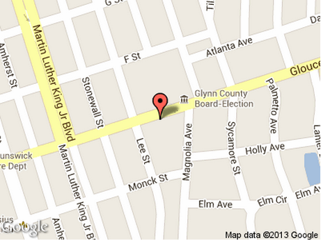

We are located on Gloucester Street in Brunswick, Ga., just a few blocks off U.S. 17. Gloucester is the first stop light on U.S. 17 south of the causeway to St. Simon's Island. If driving north, Gloucester is the second street (the first stop light) after crossing the Sidney Lanier Bridge.

For Mapquest Click Here!